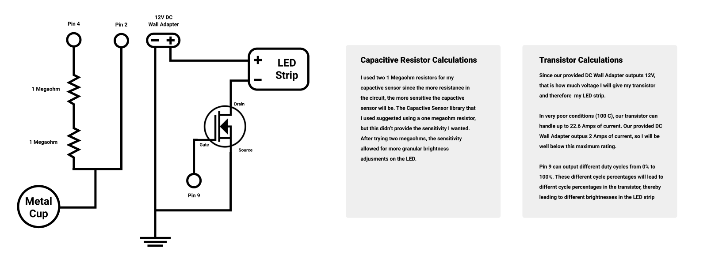
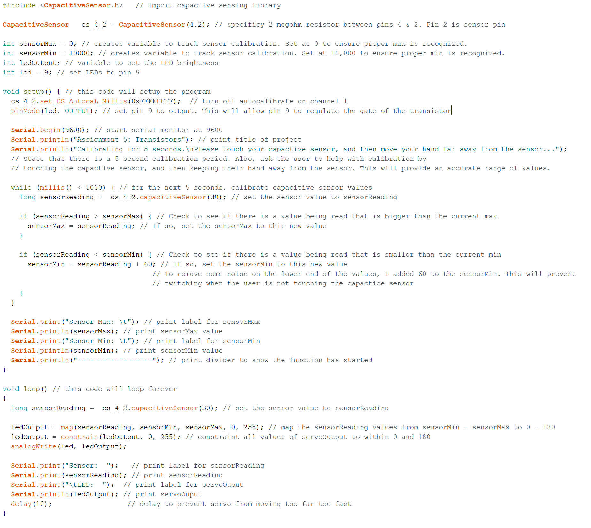

This is the schematic for my circuit. I connected our DC wall adapter to our LED
strips, regulating the voltage with a N-MOSFET Transistor. The transistor is controlled
by a capactive sensor. I utilized two 1 Megaohm resistors for the capactive sensing ciruit,
and a metal cup as the capacitor

Here is a picture of my implemented circuit.
This is the code for the circuit. I have a 5 second calibration phase, then in the loop I have the sensor input mapped to the LED brightness. I added print statements for the min and max sensor inputs to make sure the calibration was done correctly.

Here's the circuit in action! The brightness is being regulated by our N-MOSFET Transistor.